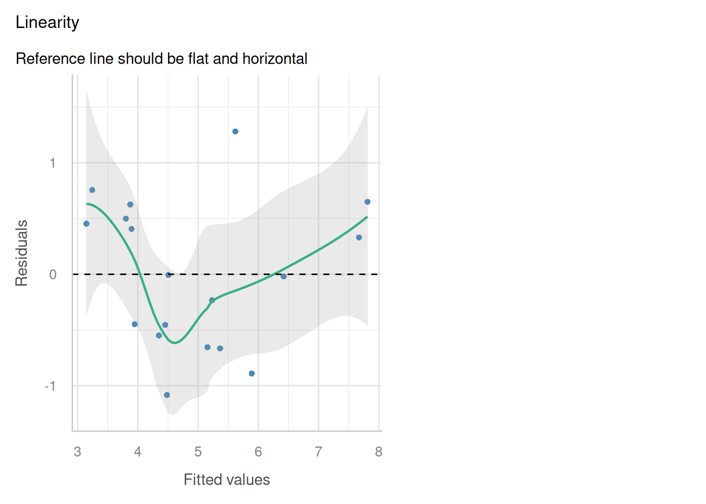
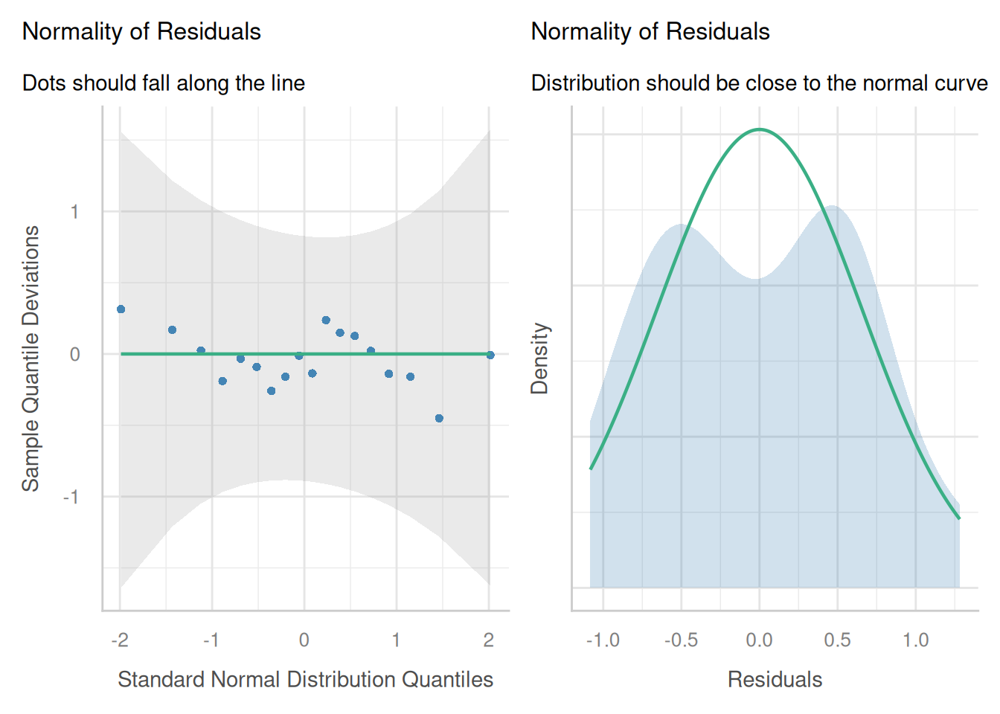
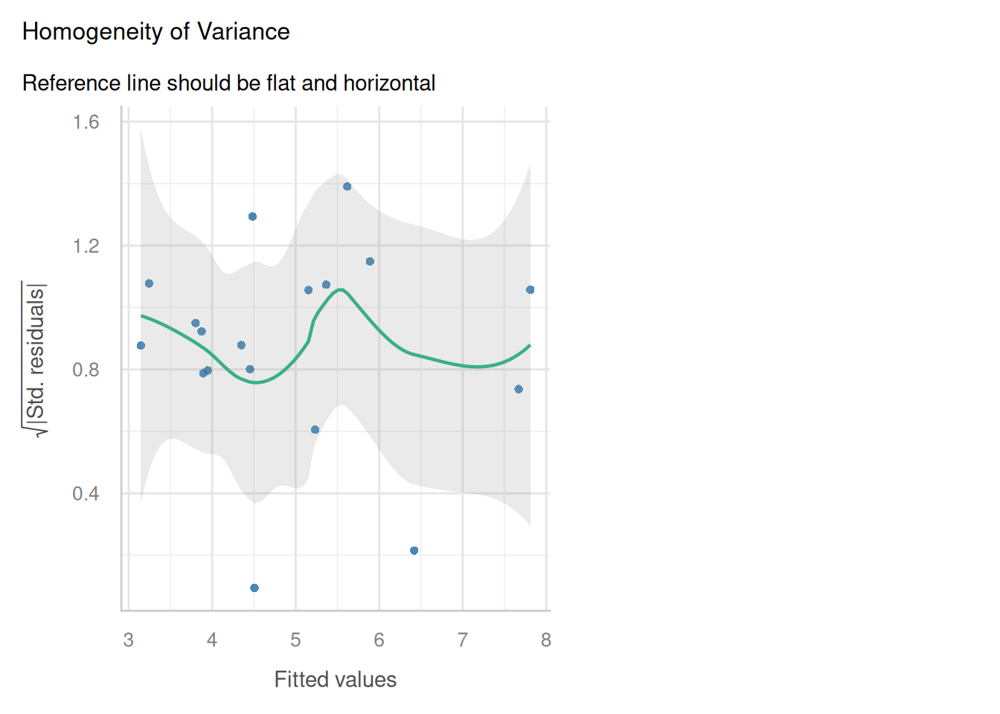
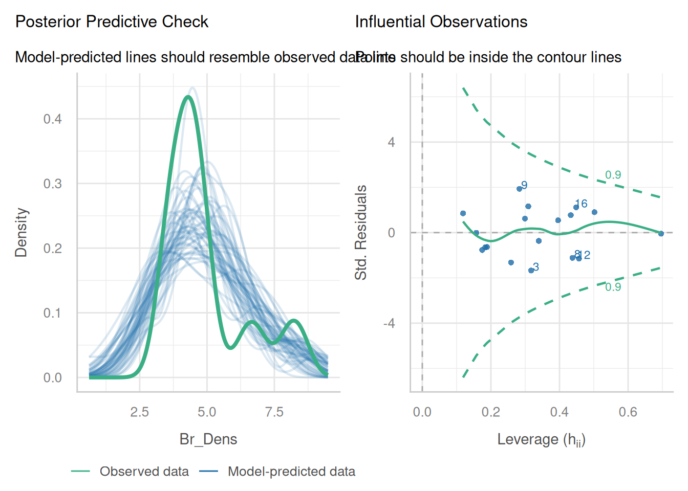
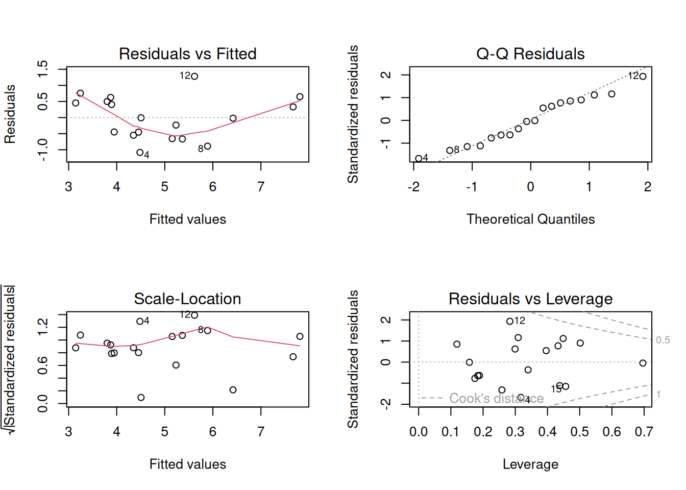
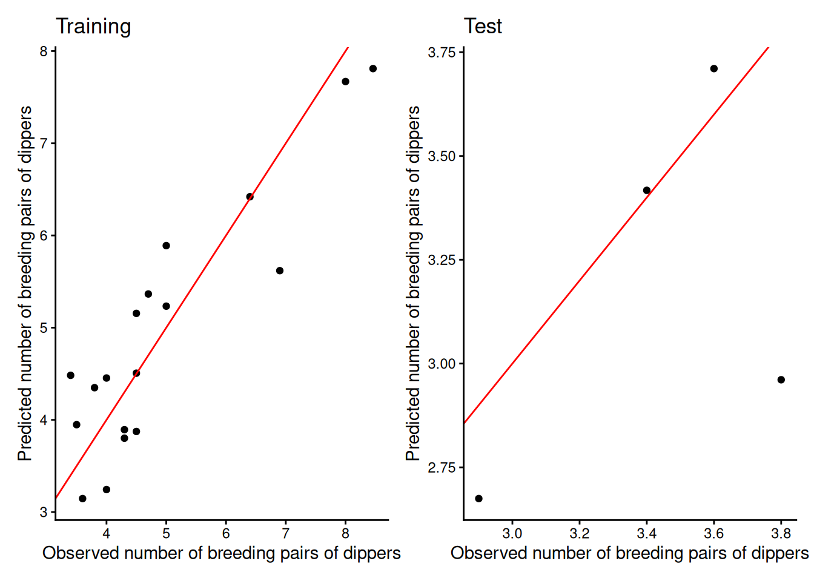
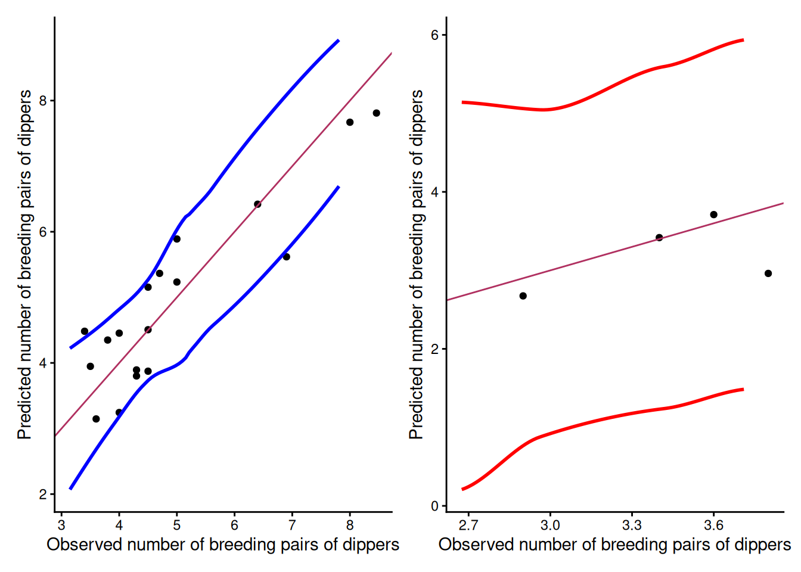

Welcome to week 9!
This week’s lecture introduced you to how we use models for prediction and how we assess the quality of the predictions.We will follow similar steps in today’s tutorial and lab class.
In this tutorial we will cover the key steps to fit a model, use it to make predictions, and then check assumptions, and select the most appropriate model.
You will learn how to:
- Split data into training and test subsets
- Fit your model to the training data and check assumptions are met
- Use the trained model to make predictions using the training and the test subsets
- Observe the quality of the predictions using appropriate statistics and plots
0.1 Packages
This tutorial uses tidyverse, readxl, moments, psych, performance and car. Install any you are missing by running the following in the console:
If a package is already installed, R will simply reinstall it — no harm done.
Downloads
| File | Used in | Download |
|---|---|---|
Dippers.csv |
all exercises | Download |
Save the file into a folder called data inside your project folder.
0.2 The data
Dippers are thrush-sized birds living mainly in the upper reaches of rivers, which feed on benthic invertebrates by probing the river beds with their beaks. The dataset in this exercise contains data from a biological survey which examined the nature of the variables thought to influence the breeding of British dippers.
Twenty-two sites were included in the survey. Some of the variables have been transformed.
Data can be found in: Dippers.csv
The variables measured were:
Altitudesite altitudeHardnesswater hardnessRiverSloperiver-bed slopeLogCaddthe numbers of caddis fly larvae, transformedLogStonethe numbers of stonefly larvae, transformedLogMaythe numbers of mayfly larvae, transformedLogOtherthe numbers of all other invertebrates collected, transformedBr_Densthe number of breeding pairs of dippers per 10 km of river
In the analyses, the four invertebrate variables were transformed using a log(x+1) transformation.
Br_Dens will be the response variable in our models.
Last week following use of the step() function, we found the most parsimonious model to be:
Br_Dens ~ Hardness + RiverSlope + LogCadd + LogStone + LogOther
Model assumptions were met and the model explained 76% of variation in dipper breeding pair density, which was quite good.
We will use this model in our walkthrough today.
1 Analysis walkthrough
1.1 Data splitting
Making predictions involves substituting in new values of x into our model equation to get new values of y.
We could use single values for each of our predictor variables and substitute them into the equation, but this is unrealistic and time consuming when we have a large number of observations. We therefore use a dataset containing our new observations of x to make the predictions and feed this into our model.
To understand the ability our model to predict new values of y from values of x previously unseen by the model, we need to test this on data that has not been used to fit the model.
It is common practice to split the data we have into two parts: a training (or calibration) subset and a test (or validation) subset. For each subset, we feed the predictor values into the model to get predictions of the y variable. We can then compare the predicted y with the observed y contained within each subset to get an indication of how well our model is performing.
(i) Read in the dippers dataset and check the data. How many observations are there?
Rows: 22
Columns: 8
$ Altitude <int> 259, 198, 251, 184, 145, 145, 198, 160, 251, 159, 160, 145,…
$ Hardness <dbl> 12.20, 22.00, 26.30, 22.50, 29.50, 39.90, 42.80, 59.60, 69.…
$ RiverSlope <dbl> 10.90, 14.70, 6.90, 4.60, 1.91, 5.00, 6.20, 14.30, 4.60, 3.…
$ LogCadd <dbl> 2.303, 2.890, 3.784, 4.419, 3.219, 3.932, 3.664, 4.431, 3.7…
$ LogStone <dbl> 5.242, 4.344, 5.231, 5.242, 3.829, 4.898, 4.357, 6.337, 5.4…
$ LogMay <dbl> 0.000, 3.401, 5.826, 5.749, 5.509, 5.749, 5.371, 0.000, 4.8…
$ LogOther <dbl> 1.386, 1.609, 1.386, 1.386, 1.099, 3.045, 1.386, 2.944, 2.5…
$ Br_Dens <dbl> 3.60, 4.30, 3.80, 3.40, 3.80, 4.50, 4.30, 5.00, 4.50, 3.40,…We can see there are 22 observations with 8 variables; all numeric as expected. The number of observations will help inform how we set up our training and test subsets.
There are different ways of splitting data, but what you choose generally depends on your dataset and the question you are trying to answer.
For example, we might split our dataset based on:
- a random selection of observations (random sampling)
- certain factors or groups within the dataset (stratified sampling)
- spatial location
- time
For the tutorial and lab sessions, we will be making a random split of the data, which is the most common method.
Because the sample size is very small, we will use 80% of the data for training and 20% for testing. The more observations we have to train the model, the better.
You are more than welcome to explore how model quality measures change based on changing ratio of training:test splits You can do this by changing the values in the chunk below. For now though, we will stick to the 80/20 split.
(ii) Take a random sample from the larger dataset containing 20% of observations. This will be the test set. The remaining 80% will be the test set.
In the code above, we first set a seed to ensure that we can reproduce the same random sample if we were to rerun the code chunk. Then we use the sample() function to randomly select 20% of the row indices from the dataset.
We create the training dataset by removing these selected indices from the original dataset ( [-index,] says “exclude everything but these indices”), and we create the test dataset by selecting only those indices.
(iii) Check the sample size and distribution of each subset. Does the sample size of each subset reflect the 80/20 split? Are the distributions (mean, median, min, max) similar between the two subsets?
Once we have split the data, we need to check the subsets. First ensure the structure and number of observations in each subset is correct, and then check the distribution of the variables (max, mean, median, min) in each subset to ensure they are similar.
'data.frame': 18 obs. of 8 variables:
$ Altitude : int 198 251 184 145 198 160 251 160 145 214 ...
$ Hardness : num 22 26.3 22.5 39.9 42.8 ...
$ RiverSlope: num 14.7 6.9 4.6 5 6.2 14.3 4.6 15.8 5.9 5.7 ...
$ LogCadd : num 2.89 3.78 4.42 3.93 3.66 ...
$ LogStone : num 4.34 5.23 5.24 4.9 4.36 ...
$ LogMay : num 3.4 5.83 5.75 5.75 5.37 ...
$ LogOther : num 1.61 1.39 1.39 3.04 1.39 ...
$ Br_Dens : num 4.3 3.8 3.4 4.5 4.3 5 4.5 4.5 6.9 3.5 ...'data.frame': 4 obs. of 8 variables:
$ Altitude : int 83 145 259 159
$ Hardness : num 153.9 29.5 12.2 68
$ RiverSlope: num 2.88 1.91 10.9 3.3
$ LogCadd : num 2.83 3.22 2.3 4.45
$ LogStone : num 3.04 3.83 5.24 3.53
$ LogMay : num 5.9 5.51 0 6.03
$ LogOther : num 5.83 1.1 1.39 3.47
$ Br_Dens : num 2.9 3.8 3.6 3.4 Altitude Hardness RiverSlope LogCadd
Min. :107.0 Min. : 15.50 Min. : 4.60 Min. :2.890
1st Qu.:160.0 1st Qu.: 40.62 1st Qu.: 5.75 1st Qu.:3.784
Median :187.5 Median : 84.73 Median : 7.25 Median :4.040
Mean :195.8 Mean : 74.07 Mean :10.34 Mean :4.326
3rd Qu.:236.5 3rd Qu.: 94.05 3rd Qu.:14.60 3rd Qu.:4.804
Max. :305.0 Max. :150.50 Max. :26.20 Max. :5.951
LogStone LogMay LogOther Br_Dens
Min. :3.434 Min. :0.000 Min. :1.099 Min. :3.400
1st Qu.:4.599 1st Qu.:5.617 1st Qu.:1.848 1st Qu.:4.000
Median :5.175 Median :5.947 Median :3.132 Median :4.500
Mean :5.215 Mean :5.545 Mean :3.419 Mean :4.937
3rd Qu.:5.751 3rd Qu.:6.277 3rd Qu.:4.726 3rd Qu.:5.000
Max. :6.791 Max. :6.880 Max. :6.773 Max. :8.460 Altitude Hardness RiverSlope LogCadd
Min. : 83.0 Min. : 12.20 Min. : 1.910 Min. :2.303
1st Qu.:129.5 1st Qu.: 25.18 1st Qu.: 2.638 1st Qu.:2.700
Median :152.0 Median : 48.75 Median : 3.090 Median :3.026
Mean :161.5 Mean : 65.90 Mean : 4.747 Mean :3.202
3rd Qu.:184.0 3rd Qu.: 89.47 3rd Qu.: 5.200 3rd Qu.:3.528
Max. :259.0 Max. :153.90 Max. :10.900 Max. :4.454
LogStone LogMay LogOther Br_Dens
Min. :3.045 Min. :0.000 Min. :1.099 Min. :2.900
1st Qu.:3.406 1st Qu.:4.132 1st Qu.:1.314 1st Qu.:3.275
Median :3.678 Median :5.705 Median :2.426 Median :3.500
Mean :3.910 Mean :4.360 Mean :2.944 Mean :3.425
3rd Qu.:4.182 3rd Qu.:5.933 3rd Qu.:4.056 3rd Qu.:3.650
Max. :5.242 Max. :6.031 Max. :5.826 Max. :3.800 We can see that the training dataset contains 18 observations and the test dataset contains 4 observations, which is very small, so we don’t expect to get very reliable information from the prediction quality statistics, but it still worth continuing to understand the process and see how we go.
Because of the limited sample size, we can see that the max and min values vary, but the distributions aren’t too different (e.g. we don’t have our response in one subset following a log distribution and the other following a normal distribution.)
From here we can proceed to model fitting.
You should now be able to split observations into training and test subsets.
1.2 Fit the model to the training data
We only use the training data to fit the model. For this tutorial we will use the model we optimised last week:
Br_Dens ~ Hardness + RiverSlope + LogCadd + LogStone + LogOther
(i) Fit the linear model to the training subset using Br_Dens as the response, and Hardness, RiverSlope, LogCadd, LogStone, and LogOther as the predictor variables.
(ii) Check the model assumptions. Could they tell us much despite the small sample size?
We can do a quick assumption check to ensure the model is appropriate for the training data, but we won’t go through this in detail as we have already done this for the full dataset last week.




Hardness RiverSlope LogCadd LogStone LogOther
1.613588 1.500583 2.218855 2.229204 2.362211 
One could argue that our assumptions have not been met (residuals do not appear to be linear or perfectly normal), but given the small sample size, it is difficult to accurately assess the assumptions. We can say that the assumptions are not grossly violated, but we should be cautious when interpreting the results.
1.3 Making predictions
We have already used the the training set to fit the model and check assumptions. We can also use this subset to make predictions and check the quality of the predictions. The predictions made with this subset will often look quite good, but this is because the observed y value has been used in model fitting.
The test subset is a set of values which are not used to fit the model, and is therefore unseen by the model. This allows us to pretend we have a new set of values, but then we have the advantage of the actual observed y variable sitting within the dataset too, so we are able to test how similar the predictions are to our real observations.
(i) Use the predict() function to obtain new estimates of Br_Dens using the training and test subsets.
(ii) Have a look at the subsets. You should see a new column has been created, named pred in both datasets.
Altitude Hardness RiverSlope LogCadd LogStone LogMay LogOther Br_Dens
2 198 22.0 14.7 2.890 4.344 3.401 1.609 4.3
3 251 26.3 6.9 3.784 5.231 5.826 1.386 3.8
4 184 22.5 4.6 4.419 5.242 5.749 1.386 3.4
6 145 39.9 5.0 3.932 4.898 5.749 3.045 4.5
7 198 42.8 6.2 3.664 4.357 5.371 1.386 4.3
8 160 59.6 14.3 4.431 6.337 0.000 2.944 5.0
pred
2 3.801267
3 4.348949
4 4.483013
6 3.874100
7 3.893348
8 5.889742 Altitude Hardness RiverSlope LogCadd LogStone LogMay LogOther Br_Dens
17 83 153.9 2.88 2.833 3.045 5.900 5.826 2.9
5 145 29.5 1.91 3.219 3.829 5.509 1.099 3.8
1 259 12.2 10.90 2.303 5.242 0.000 1.386 3.6
10 159 68.0 3.30 4.454 3.526 6.031 3.466 3.4
pred
17 2.674833
5 2.961029
1 3.710478
10 3.417321In each of the subsets, the Br_Dens column will serve as the ‘observed’ values, and the pred column will serve as the ‘predicted’ values. You will use these to assess prediction quality in the next steps.
You should now be able to fit your model to the training data and make predictions using training and test subsets.
1.4 Prediction quality: Observed vs Predicted plots
Once we have obtained our predictions, it is important to obtain a visual understanding of how our predicted and observed values compare. We can do this using a scatterplot of observed vs predicted values with a 1:1 line overlaid.
(i) Create a scatterplot of observed vs predicted values for the training and test subsets, with a 1:1 line overlaid.
Show the code
p1 <- ggplot(dippers_train, aes(Br_Dens, pred)) +
geom_point() +
geom_abline(intercept = 0, slope = 1, color = "red") +
labs(x = "Observed number of breeding pairs of dippers",
y = "Predicted number of breeding pairs of dippers",
title = "Training") +
theme_classic()
p2 <- ggplot(dippers_test, aes(Br_Dens, pred)) +
geom_point() +
geom_abline(intercept = 0, slope = 1, color = "red") +
labs(x = "Observed number of breeding pairs of dippers",
y = "Predicted number of breeding pairs of dippers",
title = "Test") +
theme_classic()
p1 + p2
For the training set, the points are quite close to the 1:1 line, which suggests that the model is doing a good job of predicting the observed values.
For the test set, the points are further away from the 1:1 line, which suggests that the model is not doing a good job of predicting the observed values, but it is important to also acknowledge that there are only four points present in the plot, so our understanding of the prediction quality is limited.
1.5 Prediction quality: precision
When using the predict() function, we can also obtain confidence and prediction intervals for the predictions. This gives us an indication of how precise our predictions and the model are.
(i) Use the predict() function to obtain confidence intervals when predicting with the training set, and prediction intervals when predicting using the test subset.
(ii) Have a look at the confidence and prediction intervals using the head() function.
fit lwr upr
2 3.801267 2.592852 5.009682
3 4.348949 3.636072 5.061825
4 4.483013 3.522100 5.443926
6 3.874100 3.286118 4.462082
7 3.893348 2.960003 4.826694
8 5.889742 5.022214 6.757270 fit lwr upr
17 2.674833 0.2080186 5.141648
5 2.961029 0.8764222 5.045636
1 3.710478 1.4848866 5.936070
10 3.417321 1.2387615 5.595880For both train_ci and test_pi, there are three columns. The first contains the estimate (our predicted value), the second contains the lower bound of the relevant interval, and the third contains the upper bound of the relevant interval. These are much easier to interpret when shown in a plot.
(iii) Create a plot of observed vs predicted values for the training and test subsets, with the confidence and prediction intervals overlaid. What do these plots tell us?
Show the code
p1 <- ggplot(dippers_train, aes(Br_Dens, pred)) +
geom_point() +
geom_smooth(data = train_ci, aes(fit, lwr), color = "blue", se = F) +
geom_smooth(data = train_ci, aes(fit, upr), color = "blue", se = F) +
geom_abline(intercept = 0, slope = 1, color = "maroon") + # 1:1 line
labs(x = "Observed number of breeding pairs of dippers", y = "Predicted number of breeding pairs of dippers") +
theme_classic()
p2 <- ggplot(dippers_test, aes(Br_Dens, pred)) +
geom_point() +
geom_smooth(data = test_pi, aes(fit, lwr), color = "red", se = F) +
geom_smooth(data = test_pi, aes(fit, upr), color = "red", se = F) +
geom_abline(intercept = 0, slope = 1, color = "maroon") + # 1:1 line +
labs(x = "Observed number of breeding pairs of dippers", y = "Predicted number of breeding pairs of dippers") +
theme_classic()
p1 + p2`geom_smooth()` using method = 'loess' and formula = 'y ~ x'
`geom_smooth()` using method = 'loess' and formula = 'y ~ x'
`geom_smooth()` using method = 'loess' and formula = 'y ~ x'Warning in simpleLoess(y, x, w, span, degree = degree, parametric = parametric,
: span too small. fewer data values than degrees of freedom.Warning in simpleLoess(y, x, w, span, degree = degree, parametric = parametric,
: pseudoinverse used at 2.6697Warning in simpleLoess(y, x, w, span, degree = degree, parametric = parametric,
: neighborhood radius 0.74767Warning in simpleLoess(y, x, w, span, degree = degree, parametric = parametric,
: reciprocal condition number 0Warning in simpleLoess(y, x, w, span, degree = degree, parametric = parametric,
: There are other near singularities as well. 0.56946`geom_smooth()` using method = 'loess' and formula = 'y ~ x'Warning in simpleLoess(y, x, w, span, degree = degree, parametric = parametric,
: span too small. fewer data values than degrees of freedom.Warning in simpleLoess(y, x, w, span, degree = degree, parametric = parametric,
: pseudoinverse used at 2.6697Warning in simpleLoess(y, x, w, span, degree = degree, parametric = parametric,
: neighborhood radius 0.74767Warning in simpleLoess(y, x, w, span, degree = degree, parametric = parametric,
: reciprocal condition number 0Warning in simpleLoess(y, x, w, span, degree = degree, parametric = parametric,
: There are other near singularities as well. 0.56946
The confidence intervals give us an indication of how precise our estimate of the mean response is for a given set of predictor values, while the prediction intervals give us an indication of how precise our predictions are for individual observations.
You should see that the confidence intervals are narrower than the prediction intervals, which is what we would expect.
The straighter the lines, the better and if the lines fan out, it may be an indication that the model is not performing well for certain ranges of the predictor variables.
Overall, we can say that the model is doing a reasonable job of predicting the observed values in the training set, but it is not doing a so well at predicting the observed values in the test set.
1.6 Prediction quality: accuracy
We can compare the predicted and observed values for training and test subsets using appropriate metrics to get an indication of the accuracy of the predictions.
Before we start, we know that the predictions for the training set will generally look better than those for the test set, because the model has been fitted to the training data, so it is not surprising that the predictions are more accurate for this subset.
But if the metrics and plots for the training set look substantially better than those for the test set, we could say the model has been overfitted to the training set observations and therefore does not predict new values well.
There are two types of metrics we will cover this week: error and linearity.
Error metrics
There are a number of error metrics we can use to assess the accuracy of our predictions. These include:
- Mean Error (Bias)
- Mean Absolute Error (MAE)
- Root Mean Square Error (RMSE)
The closer the metrics are to 0, the better the predictions are, but since the metrics are in the same units as the response, we may also need to take the range of values into account.
For example,
If we had a dataset with values that ranged from 0 to 100, then an error of 0.5 would be really good.
If we had a dataset with values that ranged from 0 to 1, then an error of 0.5 would be quite bad.
In addition to deciding how good the values are for a subset, we also need to compare the values between the training and test subsets so we can assess whether the model is overfitting to the training data.
(i) Calculate the mean error for predictions obtained with the training and test subsets. Are they similar to each other? Is the Mean Error close to 0?
[1] -5.181026e-16[1] 0.2340847Mean error is close to zero for both and the values are somewhat different between training and test subsets, suggesting overfitting.
(ii) Calculate the Mean Absolute Error. Are the values close to zero? what does this tell us?
[1] 0.5559311[1] 0.2979841The MAE is close to zero for predictions obtained for the test and training sets. This tells us that the prediction error is low overall. Mean Error gives us direction, but MAE can give us a better idea of the magnitude of the error.
(iii) Calculate the Root Mean Square Error. Are the values close to zero? what additional information can this tell us about the accuracy of our predictions?
HINT: you can use the RMSE() function from the caret package
Loading required package: lattice
Attaching package: 'caret'The following object is masked from 'package:purrr':
lift[1] 0.6393146[1] 0.4379149If the RMSE is much larger than MAE, then the model is making huge mistakes. In our case, the values aren’t too different to the MAE and they are close to zero so it tells us the model is predicting well. We can also see the values are similar between training and test predictions, indicating a stable model.
Linearity
The linearity metrics help us understand whether the model is predicting consistently (i.e. linear relationship between predicted and observed), and whether the predictions are close to the 1:1 line (i.e. agreement between predicted and observed).
(i) Calculate the r2 value. What does this metric tell us about our model? Is the r2 good for our predictions?
HINT: you can either calculate this by squaring the correlation coefficient between observed and predicted, or you can use the R2() function from the caret package.
Option 1: squaring the correlation coefficient:
[1] 0.8089057[1] 0.2543809Option 2: R2() function from the caret package.
[1] 0.8089057[1] 0.2543809The r2 tells us about the strength of the relationship between observed and predicted values. The closer to 1, the better.
In this case, we see that the r2 for the training set is 0.81, which is high and indicates the model is making consistent predictions. The r2 for the test set is 0.25 which indicates a weak relationship between observed and predicted values, suggesting the model is not predicting new values well at all.
This inconsistency between predicted and observed is suggesting that the training model has indeed been overfitted and this is why we are seeing such poor predictions.
(ii) Calculate Lin’s Correlation Coefficient for our predictions. Do our values indicate strong agreement between observed and predicted for our training and test predictions?
HINT: you can calculate the LCCC via the epiR package
Loading required package: survival
Attaching package: 'survival'The following object is masked from 'package:caret':
clusterPackage epiR 2.0.92 is loadedType help(epi.about) for summary informationType browseVignettes(package = 'epiR') to learn how to use epiR for applied epidemiological analyses[1] 0.8943591[1] 0.4131343LCCC tells us about the strength of agreement between predicted and observed, or how well the points fit the 1:1 line in our plot. This is a bit different between our r2 which instead tells us about the strength of the linear relationship between predicted and observed, and it may not always follow the 1:1 line.
The LCCC for the predictions obtained using the training set is 0.89, which indicates a strong amount of agreement between observed and predicted values. In contrast, the LCCC for the predictions obtained using the test set is 0.41, suggesting poor agreement between predicted and observed values.
This disparity is supporting what we have said so far that the model is overfitted to the training data and is not predicting new values well.
Place everything into a nice summary table for presentation
When writing reports and papers, it is best to present your results as a neat table and refer back to it within the text. This is much easier for readers to understand than having to read through a list of numbers in the text.
(i) Create a table summarising the prediction quality metrics for the training and test subsets. Have a go at writing up a few sentences interpreting the results in the table.
Show the code
# put all data into a tible and kable it
tibble(
Dataset = c("Training", "Test"),
ME = c(
mean(dippers_train$Br_Dens - dippers_train$pred),
mean(dippers_test$Br_Dens - dippers_test$pred)
),
MAE = c(
mean(abs(dippers_train$Br_Dens - dippers_train$pred)),
mean(abs(dippers_test$Br_Dens - dippers_test$pred))
),
RMSE = c(
RMSE(dippers_train$Br_Dens, dippers_train$pred),
RMSE(dippers_test$Br_Dens, dippers_test$pred)
),
R2 = c(
R2(dippers_train$Br_Dens, dippers_train$pred),
R2(dippers_test$Br_Dens, dippers_test$pred)
),
LCCC = c(
epi.ccc(dippers_train$Br_Dens, dippers_train$pred)$rho.c$est,
epi.ccc(dippers_test$Br_Dens, dippers_test$pred)$rho.c$est
)
) %>%
knitr::kable(digits = 2)| Dataset | ME | MAE | RMSE | R2 | LCCC |
|---|---|---|---|---|---|
| Training | 0.00 | 0.56 | 0.64 | 0.81 | 0.89 |
| Test | 0.23 | 0.30 | 0.44 | 0.25 | 0.41 |
Drawing upon this table, we might say:
“The model performed well at predicting the observed values in the training set (Table 1), with a low mean error (<0.01), low MAE (0.56), low RMSE (0.64), high r2 (0.81) and high LCCC (0.89). However, the model did not perform well at predicting the observed values in the test set, with a higher mean error (0.23), a lower MAE (0.30), lower RMSE (0.22), lower r2 (0.25) and lower LCCC (0.41). This suggests that the model is overfitted to the training data and does not predict new values well.”
You should now be able to assess the prediction quality of a model using metrics and plots.
Wrap-up
In this tutorial, we used the dippers dataset to get some practice data splitting, prediction and assessing the quality of the predictions.
This will hopefully set you up for the lab exercises, where you will use similar code to answer the questions.
Great work everyone!
Example exam questions
State two reasons why we might we choose to split our dataset instead of obtaining new observations to serve as a validation subset?
Why do we look at more than one metric when interpreting prediction quality?
When looking at an observed vs predicted plot, what can we conclude about our model if all of our points follow the 1:1 line?